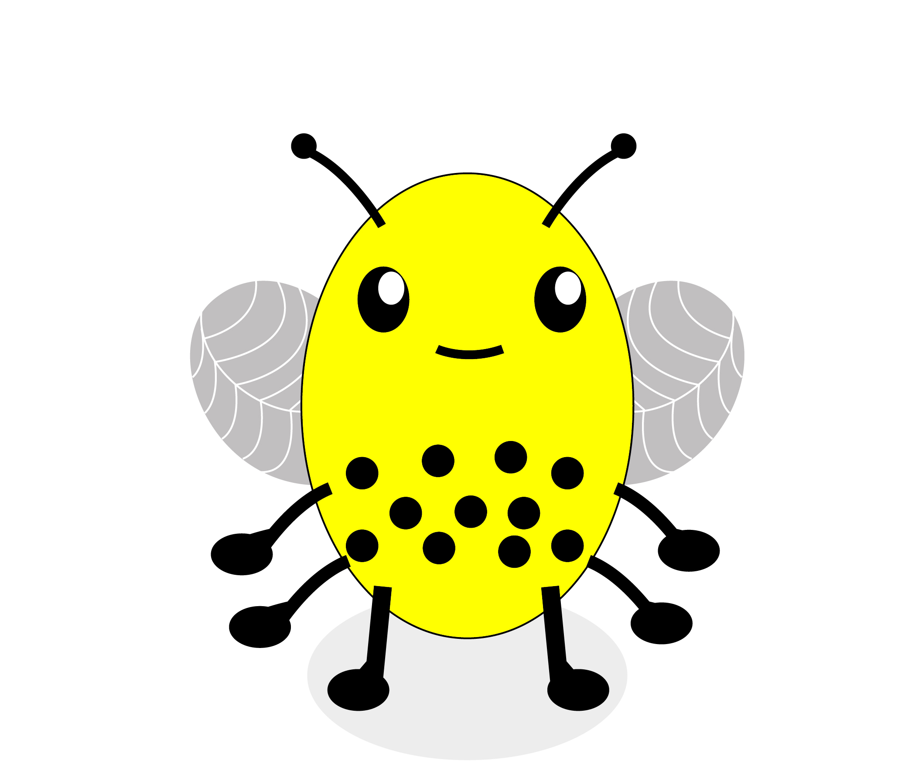
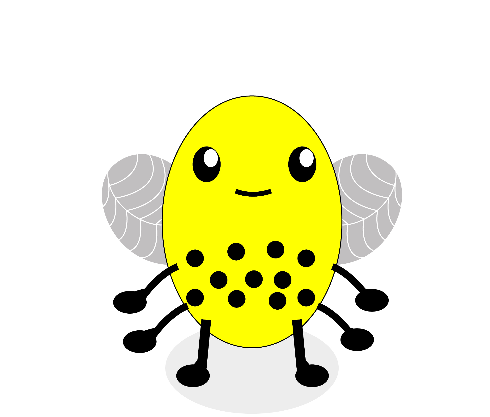
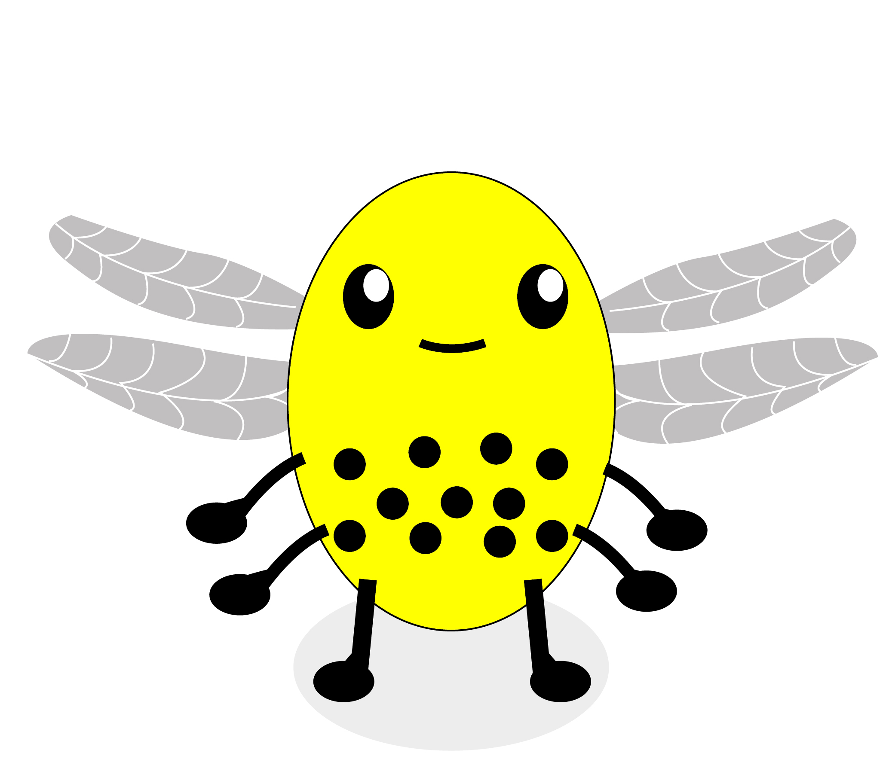
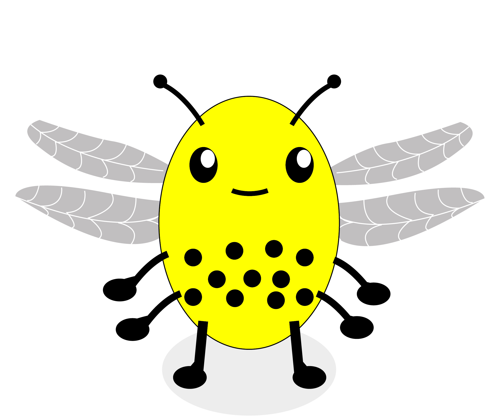

<!DOCTYPE html>

<html>
  <head>
    <meta charset="utf-8">
    <meta name="viewport" content="width=device-width, initial-scale=1, shrink-to-fit=no">
    <title>UNSW Monsters Game</title>
    <script src="./js/jspsych.js"></script>
    <script src="./js/plugins/jspsych-html-keyboard-response.js"></script>
    <script src="./js/plugins/jspsych-html-button-response.js"></script>
    <script src="./js/plugins/jspsych-image-keyboard-response.js"></script>
    <script src="./js/plugins/jspsych-external-html.js"></script>
    <script src="./js/welcome.js"></script>
    <script src="./js/jquery.min.js"></script>
    <link href="./js/css/jspsych.css" rel="stylesheet" type="text/css"></link>
  </head>

  <body>
    <div id="welcome"></div>
  </body>


  <script>

  // var relevantDim = ['L', 'B'];


  // run the welcome
  welcome.run();


    // -------- Set up --------
    /* initialise timeline*/
    var timeline=[];
    var turkcode = 'C' + (Math.floor(Math.random() * 899999) + 100000).toString();
	  var images = [
      './img/avoid.png',
      './img/blockimage.png',
      './img/droplet.png',
      './img/honeycomb.png',
      './img/instr_outcomes_fullinfo.png',
      './img/instr_outcomes_standard.png',
      './img/instr_outcomes_test.png',
      './img/instrantennae.png',
      './img/instrlegs.png',
      './img/instrstripes.png',
      './img/instrwings.png',
      './img/stinger.png',
      './img/stingeravoid.png',

      './img/A0-B0-L0-W0.jpg',
      './img/A0-B0-L0-W1.jpg',
      './img/A0-B0-L1-W0.jpg',
      './img/A0-B0-L1-W1.jpg',
      './img/A0-B1-L0-W0.jpg',
      './img/A0-B1-L0-W1.jpg',
      './img/A0-B1-L1-W0.jpg',
      './img/A0-B1-L1-W1.jpg',
      './img/A1-B0-L0-W0.jpg',
      './img/A1-B0-L0-W1.jpg',
      './img/A1-B0-L1-W0.jpg',
      './img/A1-B0-L1-W1.jpg',
      './img/A1-B1-L0-W0.jpg',
      './img/A1-B1-L0-W1.jpg',
      './img/A1-B1-L1-W0.jpg',
      './img/A1-B1-L1-W1.jpg',
	   ];


    // function to start the jsPsych experiment
    function startExperiment(){

      function download_data(data) {
        var csvString = jsPsych.data.dataAsCSV();
        var a         = document.createElement('a');
        a.href        = 'data:attachment/csv,' + csvString;
        a.target      = '_blank';
        a.download    = 'ExperimentData.csv';

        document.body.appendChild(a);
        a.click();
      }
      // record the turkcode in the jsPsych data
      jsPsych.data.addProperties({
        turkcode: turkcode
      });

      jsPsych.init({
        timeline: timeline,
        preload_images: images,
        on_finish: function() {
          jsPsych.data.get().localSave('csv','test.csv')
         },  // uncomment to locally save data file
        /*on_finish: function() {
          endExperiment(jsPsych.data.get().csv(), function() {document.write('<div id="endscreen" class="endscreen" style="width:1000px"><div class="endscreen" style="text-align:center; border:0px solid; padding:10px; font-size:120%; width:800px"><p><br><br><br>You\'re all done!</p></div></div>') }
        )}, // uncomment for cloud save */
        show_progress_bar: false,
        auto_update_progress_bar: false
      });
      }


    // function to end the experiment
    function endExperiment(dataset,callback) {
      // $.post('submit',{"content": dataset}); // uncomment to post data
      console.log(dataset) // comment out to avoid console log
      setTimeout(callback,1000)
      // setTimeout specifies after a certain no of milliseconds
    }


    // -------- set up accumulating variables
    var i = 0; // for showing the next stimulis
    
    // -- for points
    var pointsInitial = 0;
    var pointsAdded = 0;
    var totalPoints = 0;

    function addNum(pointsInitial,pointsAdded){
      return pointsInitial+pointsAdded
    };
    var pointsCurrent = addNum(pointsInitial,pointsAdded);

    pointsCurrent = addNum(pointsCurrent,pointsAdded);

 

    // -------- Randomisation set up

  function shuffle(array) {
    var currentIndex = array.length, temporaryValue, randomIndex;

    // While there remain elements to shuffle...
    while (0 !== currentIndex) {

      // Pick a remaining element...
      randomIndex = Math.floor(Math.random() * currentIndex);
      currentIndex -= 1;

      // And swap it with the current element.
      temporaryValue = array[currentIndex];
      array[currentIndex] = array[randomIndex];
      array[randomIndex] = temporaryValue;
    }

    return array;
  }
 
  // ------- Condition
  var condition = ['full', 'partial'];
  var condition = jsPsych.randomization.sampleWithoutReplacement(condition, 1)[0]; // not sure what this does
  jsPsych.data.addProperties({
          condition: condition
        });

  
  
  // ------- Bee stimuli

  var bees_OG = shuffle(
    [
      'A0-B0-L0-W0',
      'A0-B0-L0-W1',
      'A0-B0-L1-W0',
      'A0-B0-L1-W1',
      'A0-B1-L0-W0',
      'A0-B1-L0-W1',
      'A0-B1-L1-W0',
      'A0-B1-L1-W1',
      'A1-B0-L0-W0',
      'A1-B0-L0-W1',
      'A1-B0-L1-W0',
      'A1-B0-L1-W1',
      'A1-B1-L0-W0',
      'A1-B1-L0-W1',
      'A1-B1-L1-W0',
      'A1-B1-L1-W1'
    ]   
  );
 
function make_bees(){

    var bees_dangerous = shuffle([
    'A1-B1-L1-W0',
    'A1-B1-L1-W1',
    'A0-B1-L1-W0',
    'A0-B1-L1-W1',
  ]);

  var bees_friendly = shuffle([
    'A0-B0-L0-W0',
    'A0-B0-L0-W1',
    'A0-B0-L1-W0',
    'A0-B0-L1-W1',
    'A0-B1-L0-W0',
    'A0-B1-L0-W1',
    'A1-B0-L0-W0',
    'A1-B0-L0-W1',
    'A1-B0-L1-W0',
    'A1-B0-L1-W1',
    'A1-B1-L0-W0',
    'A1-B1-L0-W1',
  ]);

  var bees_dangerous_1 = bees_dangerous.slice(0,2); //dangerous bees for first subblock of block, 2 dangerous
  var bees_friendly_1 = bees_friendly.slice(0,6); // friendly bees for first subblock of block, 6 friendly
  var bees_dangerous_2 = bees_dangerous.slice(2,); // '' for second subblock of block, 2 dangerous
  var bees_friendly_2 = bees_friendly.slice(6,); // '' for second subblock of block, 6 friendly

  var first_subblock = shuffle(bees_dangerous_1.concat(bees_friendly_1)); // combine friendly and dangerous and shuffle to form first subblock
  var second_subblock = shuffle(bees_dangerous_2.concat(bees_friendly_2)); //combine friendly and dangerous and shuffle to form second subblock
  var beesStim = first_subblock.concat(second_subblock);
  return beesStim;

 };

var bees = []; // initiate bees array

for (var j = 0; j < 10; j++) {
    bees = bees.concat(make_bees());  // now repeat the make_bees function 10 times, concatenating each time
}                                     

// take the first 128 bees for learning phase, leave 32 for test phase.

var LP_bees = bees.slice(0,128); // Learning phase bees
var TP_bees = bees.slice(128,); // Test phase bees


// -------- Instructions & quiz --------

  var instruct_1 = {
  type:'external-html',
  url: "./pages/instruct-1.html",
  cont_btn: "next", //Issue: looking for a way to go the previous page
  execute_script: true,
  };

  var instruct_2 = {
  type:'external-html',
  url: "./pages/instruct-2.html",
  cont_btn: "next",
  execute_script: true,
  };

  var instruct_3 = {
  type:'external-html',
  url: "./pages/instruct-3.html",
  cont_btn: "next",
  };

  var instruct_ready = {
  type:'external-html',
  url: "./pages/instruct-ready.html",
  cont_btn: "next",
  };


// comprehension check

var quiz = {
  type:'external-html',
  url: './pages/quiz.html',
  cont_btn: 'continue',
}; //Issue: need to record responses to html page, like with welcome.js

timeline.push(instruct_1);
timeline.push(instruct_2);
timeline.push(instruct_3);
timeline.push(quiz);
timeline.push(instruct_ready);

  // functions for feedback displays
  function showActualPoints(){
      var lastChoice = jsPsych.data.get().last(1).values()[0].button_pressed; // get last avoid/approach decision
      var lastBee = jsPsych.data.get().last(1).values()[0].stimulus; // get last bee shown
      if (lastChoice == 0 && (lastBee == "" || lastBee == "" || lastBee == "" || lastBee == "")) { 
        return pointsAdded = -3;
      } else if (lastChoice == 0){
        return pointsAdded = 1;
      } else {
        return pointsAdded = 0;
      }
    };

 
  function showForgonePoints(){
    var lastChoice = jsPsych.data.get().last(1).values()[0].button_pressed; // get last avoid/approach decision
    var lastBee = jsPsych.data.get().last(1).values()[0].stimulus; // get last bee shown   
    if (lastBee == "" || lastBee == "" || lastBee == "" || lastBee == "") { 
        return pointsForgone = -3;
      } else {
        return pointsForgone = 1;
    } 
  };
  

  function ffAvoidFeedback(){
    showForgonePoints();
    if (pointsForgone == -3) {
      return "Whew, you avoided being stung! You earned <b>" + pointsAdded + " </b> points."
    } else if (pointsForgone == 1) {
      return "Oops, you avoided a friendly hive. You earned <b>" + pointsAdded + " </b>points."
    }
  };

  
    // -------- the experiment itself -------
   
    // the learning phase
    var decision_LP = {
        type: 'html-button-response',
        stimulus: function(){
          return ""
        },
        prompt: "<p> Harvest honey from this hive? </p>",
        choices: ['Harvest', 'Avoid'],
        on_finish: function(data){
          i = i + 1;
          return showActualPoints();
        },
        counter_displayed: function(data){
          return pointsCurrent;
        },
    };

    var feedbackPartial = {
      type: 'html-keyboard-response',
      is_html:true,
      choices: jsPsych.NO_KEYS,
      trial_duration: 2000,
      stimulus: function(){
        if (pointsAdded == 0) {
          return "You avoided this hive. You earned <b>" + pointsAdded + " </b>points."
        }
        else if (pointsAdded == 1){
          return "You successfully harvested honey! You earned <b>" + pointsAdded + " </b>point."
        } else {
          return "Ouch, you were stung! You lost <b>" + pointsAdded + " </b>points." // maybe change to "you lost 3 points" rather than "lost -3"
        }
      },
      on_finish: function(data){
        pointsCurrent = pointsCurrent + pointsAdded;
        data.earnedThis = pointsAdded;
        data.earnedCumulative = pointsCurrent;
      }
    };

    var feedbackFull = {
      type: 'html-keyboard-response',
      is_html:true,
      choices: jsPsych.NO_KEYS,
      trial_duration: 2000,
      on_start: function(){
        return pointsAdded;
      },
      stimulus: function(){
        if (pointsAdded == 1){
          return "You successfully harvested honey! You earned <b>" + pointsAdded + " </b>point."
        } else if (pointsAdded == -3){
          return "Ouch, you were stung! You lost <b>" + pointsAdded + " </b>points."
        } else {
          return ffAvoidFeedback()
        }
      },
      on_finish: function(data){
        pointsCurrent = pointsCurrent + pointsAdded;
        data.earnedThis = pointsAdded;
        data.earnedCumulative = pointsCurrent;
      }
    };


    // conditional thing for trials timeline
    function conditionalTimeline(){
      if (condition == 'partial'){
        return [decision_LP, feedbackPartial];
      } else {
        return [decision_LP, feedbackFull];
      }
    };

    //
    var learningPhase = {
      timeline: conditionalTimeline(),
      repetitions: 16, //16,
      randomize_order: true
    };
            
  timeline.push(learningPhase);

  var TP_instructions = {
  type:'external-html',
  url: "./pages/testinstr.html",
  cont_btn: "next",
  };
  timeline.push(TP_instructions);

  // the test phase
  var decision_TP = {
        type: 'html-button-response',
        stimulus: function(){
          return ""
        },
        prompt: "<p> Harvest honey from this hive? </p>",
        choices: ['Harvest', 'Avoid'],
        on_finish: function(data){
          i = i + 1;
        },
    };

  var feedbackTP = {
    type: 'html-keyboard-response',
    is_html:true,
    choices: jsPsych.NO_KEYS,
    trial_duration: 1400,
    on_start: function(){
      var lastChoice = jsPsych.data.get().last(1).values()[0].button_pressed; // get last avoid/approach decision
      var lastBee = jsPsych.data.get().last(1).values()[0].stimulus; // get last bee shown
      if (lastChoice == 0 && (lastBee == "" || lastBee == "" || lastBee == "" || lastBee == "")) { 
        return pointsAdded = -3;
      } else if (lastChoice == 0){
        return pointsAdded = 1;
      } else {
        return pointsAdded = 0;
      }
    },
    stimulus: '', // don't show anything, move accumulating bit to on_start
    on_finish: function(data){
      pointsCurrent = pointsCurrent + pointsAdded;
      data.earnedThis = pointsAdded;
      data.earnedCumulative = pointsCurrent;
    }
  };

  var testPhase = {
    timeline: [decision_TP, feedbackTP],
    repetitions: 8,
    randomize_order: false,
  };

  timeline.push(testPhase);


  // bonus
  function calculateBonus(){
    if (pointsCurrent<0) {
      return 0;
      } else {
      return pointsCurrent/20;
      }
  };

  //game completion screen
  var finished = {
    type: 'html-button-response',
    stimulus: function(){
      return 'You are all done with the beekeeper game! <br><br>You earned <b>' + pointsCurrent + '</b> points, <br> which equals a bonus of $' + calculateBonus();
    },
    on_finish:   jsPsych.data.addProperties({
        bonus: calculateBonus()
      }),
    choices: ['Done!'],
  };

  timeline.push(finished);
  
// posttask questionnaire

var endquestions = {
  type: 'external-html',
  url: './pages/endingquestions.html',
  cont_btn: 'next',
}; // Issue: need to record responses

var questionnaire = {
  type: 'external-html',
  url: './pages/postquestionnaire.html',
  cont_btn: 'continue', // Issue: need to record responses
};

timeline.push(endquestions);
timeline.push(questionnaire);

  </script>
</html>
